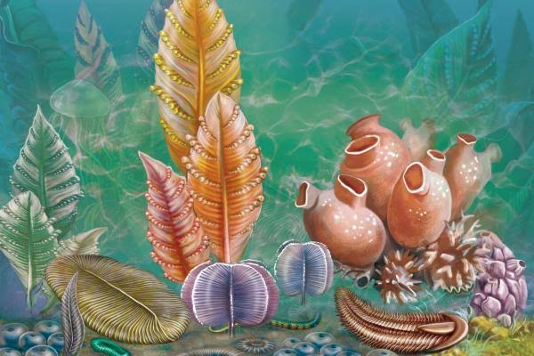

PRECÁMBRICO
El Precámbrico representa la etapa más antigua y extensa de la historia de la Tierra. Durante este período se formaron nuestro planeta, los primeros océanos y las primeras formas de vida.

Información del Precámbrico
Formación de la Tierra
La Tierra se formó hace aproximadamente 4.600 millones de años. Durante sus primeras etapas, el planeta sufrió grandes cambios y comenzó a desarrollar una superficie sólida y océanos.
Primeras formas de vida
Durante el Precámbrico aparecieron algunas de las primeras formas de vida conocidas. Eran organismos muy simples, principalmente microorganismos.
La atmósfera
La atmósfera terrestre cambió considerablemente durante este período. La aparición de organismos capaces de realizar fotosíntesis contribuyó al aumento del oxígeno.
Duración
El Precámbrico comprende desde la formación de la Tierra, hace aproximadamente 4.600 millones de años, hasta hace unos 538 millones de años.
Características principales
01
Formación terrestre
Se formó la Tierra y su estructura inicial.
02
Primeros océanos
Aparecieron grandes cantidades de agua líquida.
03
Primeros organismos
Surgieron formas de vida microscópicas.
04
Aumento del oxígeno
La actividad de ciertos organismos modificó la atmósfera.
¿QUÉ SIGUE?
Después del Precámbrico comienza el Paleozoico, una etapa caracterizada por una gran diversificación de la vida.
Continuar al Paleozoico →